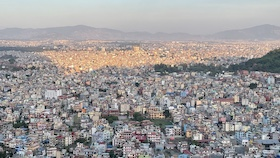

Kathmandu
Kathmandu,[a] officially Kathmandu Metropolitan City,[b] is the capital and most populous city of Nepal with 845,767 inhabitants living in 105,649 households in 2021[2] and 2.9 million people in its urban agglomeration. It is located in the Kathmandu Valley, a large valley in the high plateaus in central Nepal, at an altitude of 1,400 metres (4,600 feet). The city is one of the oldest continuously inhabited places in the world, founded in the 2nd century CE. The valley was historically called the "Nepal Mandala" and has been the home of the Newar people, a cosmopolitan urban civilization in the Himalayan foothills.
Pokhara
Pokhara (Nepali: पोखरा, Nepali pronunciation: [ˈpokʰʌɾa]) is a metropolitan city in Nepal, which serves as the capital of Gandaki Province.[3] It is the second most populous city of Nepal after Kathmandu, with 518,452 inhabitants living in 101,669 households in 2021.[4] It is the country's largest metropolitan city in terms of area. The city also serves as the headquarters of Kaski District.[5] Pokhara is located 200 kilometres (120 miles) west of the capital, Kathmandu.
Dharan
Dharan (Nepali: धरान) a sub-metropolitan city in Sunsari District of Province No. 1, Nepal, which was established \as a fourth municipality in the Kingdom in 1958. It is the third most populous city in Eastern Nepal after Biratnagar and Itahari. Dharan is the location of the former Vijayapur, the seat of a historical Limbuwan kingdom, which was later used by the Sen kings of Makwanpur.